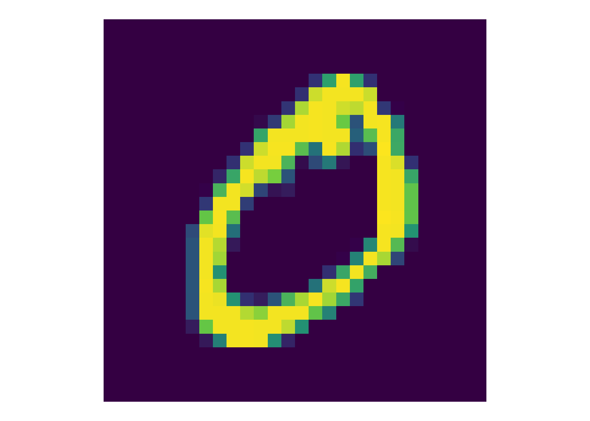

library(keras) # TensorFlow API
library(tensorflow) # TensorFlow pur
library(tidyverse) # Datenjudo
## ── Attaching core tidyverse packages ──────────────────────── tidyverse 2.0.0 ──
## ✔ dplyr 1.1.3 ✔ readr 2.1.4
## ✔ forcats 1.0.0 ✔ stringr 1.5.0
## ✔ ggplot2 3.4.3 ✔ tibble 3.2.1
## ✔ lubridate 1.9.2 ✔ tidyr 1.3.0
## ✔ purrr 1.0.2
## ── Conflicts ────────────────────────────────────────── tidyverse_conflicts() ──
## ✖ dplyr::filter() masks stats::filter()
## ✖ dplyr::lag() masks stats::lag()
## ℹ Use the conflicted package (<http://conflicted.r-lib.org/>) to force all conflicts to become errors
library(tictoc) # Zeitmessung11 Einstieg in Neuronale Netze
11.1 Quick-Start
11.1.1 Quick Start mit R
Wir halten uns an das Tutorial von TensforFlow for R, “Hello, World!”.
11.1.1.1 Setup
Wir starten die benötigten Pakete:
Das Installieren von TensorFlow bzw. Keras kann Schwierigkeiten bereiten. Tipp: Stellen Sie in RStudio sicher, dass Sie die richtige Python-Version verwenden.
mnist <- dataset_mnist()
X_train <- mnist$train$x
X_test <- mnist$test$x
y_train <- mnist$train$y
y_test <- mnist$test$yIn Kurzform kann man synonym schreiben:
c(c(x_train, y_train), c(x_test, y_test)) %<-% keras::dataset_mnist()11.1.1.2 Visualisieren
Wählen wir ein Bild aus; das schauen wir uns näher an Quelle.
image_id <- 2
my_image <- mnist$train$x[image_id, 1:28, 1:28] %>%
as_tibble()
## Warning: The `x` argument of `as_tibble.matrix()` must have unique column names if
## `.name_repair` is omitted as of tibble 2.0.0.
## ℹ Using compatibility `.name_repair`.
my_imagemy_image_prepared <-
my_image |>
rownames_to_column(var = 'y') %>%
pivot_longer(names_to = "x", values_to = "val", V1:V28) %>%
mutate(x = str_replace(x, 'V', '')) %>%
mutate(x = as.numeric(x),
y = as.numeric(y)) %>%
mutate(y = 28-y)
head(my_image_prepared)So, genug der Vorarbeiten, jetzt plotten:
my_image_prepared %>%
ggplot(aes(x, y))+
geom_tile(aes(fill = val + 1))+
coord_fixed()+
theme_void()+
theme(legend.position="none") +
scale_fill_viridis_c()
11.1.1.3 Neuronales Netz 1
Für unser Netzwerk wollen wir Werte zwischen 0 und 1, daher teilen wir durch den Max-Wert, d.i. 255:
x_train <- X_train / 255
x_test <- X_test / 255model <- keras_model_sequential(input_shape = c(28, 28)) %>%
layer_flatten() %>%
layer_dense(128, activation = "relu") %>%
layer_dropout(0.2) %>%
layer_dense(10)Hier ist eine Beschreibung des Modells:
model
## Model: "sequential"
## ________________________________________________________________________________
## Layer (type) Output Shape Param #
## ================================================================================
## flatten (Flatten) (None, 784) 0
## dense_1 (Dense) (None, 128) 100480
## dropout (Dropout) (None, 128) 0
## dense (Dense) (None, 10) 1290
## ================================================================================
## Total params: 101770 (397.54 KB)
## Trainable params: 101770 (397.54 KB)
## Non-trainable params: 0 (0.00 Byte)
## ________________________________________________________________________________Dann definieren wir eine Fehlerfunktion:
loss_fn <- loss_sparse_categorical_crossentropy(from_logits = TRUE)Bevor wir das Modul trainieren, konfigurieren wir es und kompilieren wir es in Maschinencode:
Jetzt ist Trainingszeit, das besorgt die fit-Methode:
tic()
model %>% fit(x_train, y_train, epochs = 5)
## Epoch 1/5
## 1875/1875 - 6s - loss: 0.2933 - accuracy: 0.9140 - 6s/epoch - 3ms/step
## Epoch 2/5
## 1875/1875 - 5s - loss: 0.1415 - accuracy: 0.9579 - 5s/epoch - 3ms/step
## Epoch 3/5
## 1875/1875 - 5s - loss: 0.1065 - accuracy: 0.9680 - 5s/epoch - 3ms/step
## Epoch 4/5
## 1875/1875 - 5s - loss: 0.0869 - accuracy: 0.9737 - 5s/epoch - 3ms/step
## Epoch 5/5
## 1875/1875 - 5s - loss: 0.0763 - accuracy: 0.9751 - 5s/epoch - 3ms/step
toc()
## 27.897 sec elapsedDie Modellgüte überprüfen wir natürlich im Test-Set:
Nicht schlecht: Knapp 98% Trefferquote.
Und hier sind die Vorhersagen für die ersten zwei Bilder:
predictions <- predict(model, x_test[1:2, , ])
## 1/1 - 0s - 92ms/epoch - 92ms/step
predictions
## [,1] [,2] [,3] [,4] [,5] [,6] [,7]
## [1,] -3.905925 -10.611533 -1.400373 4.933351 -16.82393 -8.1285248 -18.969732
## [2,] -7.280436 5.272494 11.744059 -3.961411 -19.05402 -0.2386339 -2.736672
## [,8] [,9] [,10]
## [1,] 9.691772 -4.551620 -1.77038
## [2,] -20.078672 -0.959926 -14.45026Hm, das sind ja keine Wahrscheinlichkeiten? Stimmt! Es sind Logits. Daher müssen wir noch konvertieren:
tf$nn$softmax(predictions)
## tf.Tensor(
## [[1.23274579e-06 1.50891550e-09 1.51015303e-05 8.50593665e-03
## 3.02450936e-12 1.80726467e-08 3.53789682e-13 9.91466632e-01
## 6.46325897e-07 1.04310670e-05]
## [5.45872712e-09 1.54439918e-03 9.98445655e-01 1.50843240e-07
## 4.20620588e-14 6.24176197e-06 5.13361230e-07 1.50969060e-14
## 3.03426854e-06 4.20024149e-12]], shape=(2, 10), dtype=float64)Ob ihr wirklich richtig steht, seht ihr, wenn das Licht angeht:
y_test[1:2]
## [1] 7 2Sieht gut aus!
11.1.1.4 Best-Bet-Digit
Möchte man ein Modell, das gleich die “Best-Bet-Digit” nennt, kann man das so machen:
Oder ein eigenes, dazu passendes Modell bauen:
probability_model <-
keras_model_sequential() %>%
model() %>%
layer_activation_softmax() %>%
layer_lambda(tf$argmax)Hier sind die Vorhersagen:
probability_model(x_test[1:5, , ])
## tf.Tensor([3 2 1 0 4 2 2 0 2 4], shape=(10), dtype=int64)y_test[1:5]
## [1] 7 2 1 0 411.1.2 Quick-Start mit Python und Colab
Am einfachsten ist der Einstieg mit Google Colab, wo Python voreingestellt ist. Beginnen Sie mit dem [MNIST-Tutorial](https://www.tensorflow.org/tutorials/quickstart/beginner.
11.2 Vertiefung
Die TensforFlow-Docs bieten einen guten Einstieg in Keras und TensorFlow.